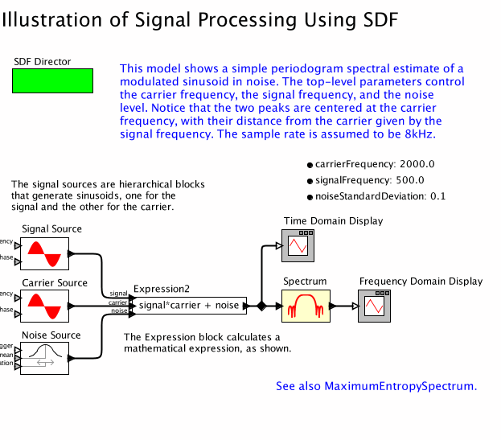

Below is a browsable image of the model.
- To view or save the MoML file for this model, click here.
- For a chapter overview, click here.

The model shown above illustrates the use of the Expression actor,
which has an abritrary set of ports, and references the input data
provided on those ports in an arbitrary expression that calculates
the output.